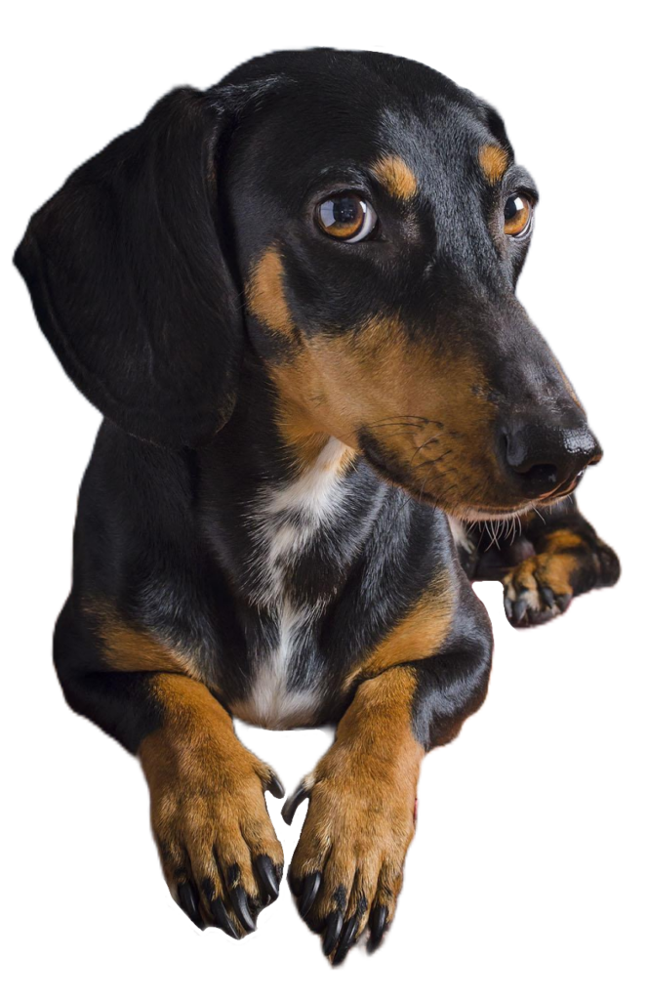
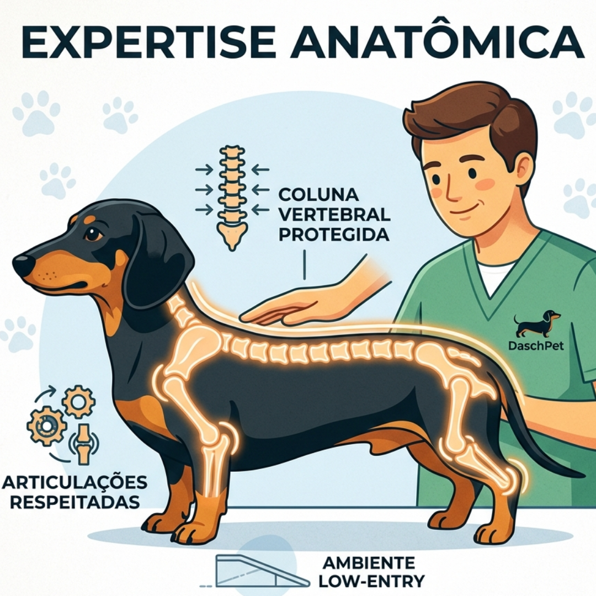
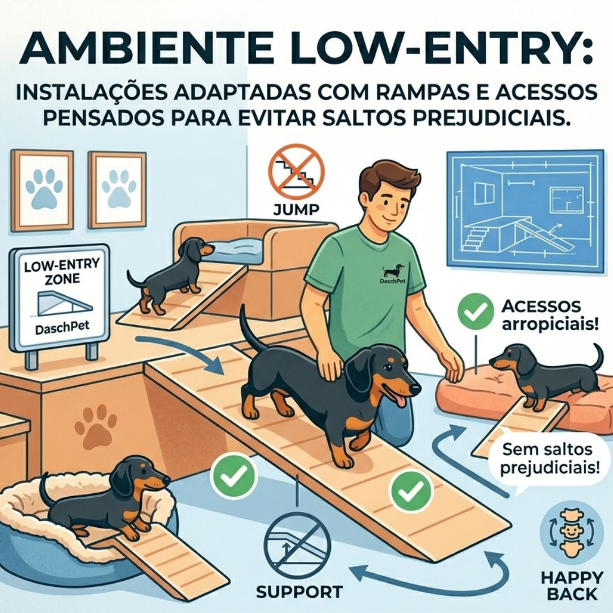
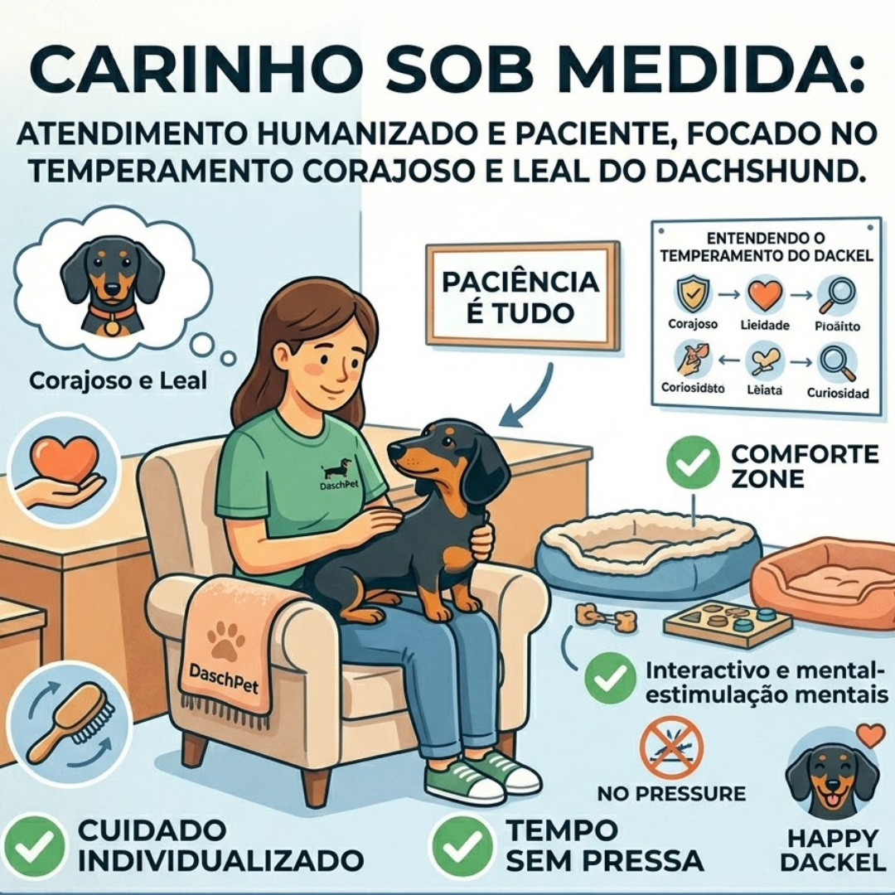

Destaques
Expertise Anatômica:
Cuidado redobrado com a coluna e as articulações, respeitando a
fisiologia única da raça.
Ambiente Low-Entry:
Instalações adaptadas com rampas e acessos pensados para evitar
saltos prejudiciais.
Carinho Sob Medida:
Atendimento humanizado e paciente, focado no temperamento corajoso e
leal do Dachshund.




Sobre a DaschPet
A DaschPet nasceu da paixão pela personalidade vibrante dos Dachshunds. Há 5 anos no mercado, transformamos nossa admiração em um centro de excelência. Entendemos que um 'salsichinha' não é apenas um cão de porte pequeno, mas um gigante em energia que exige cuidados específicos. Com mais de 1.200 clientes atendidos e uma comunidade fiel, nossa missão é garantir que cada centímetro do seu melhor amigo receba o tratamento que merece.

Serviços
Banho e Tosa
Consultas
PetShop